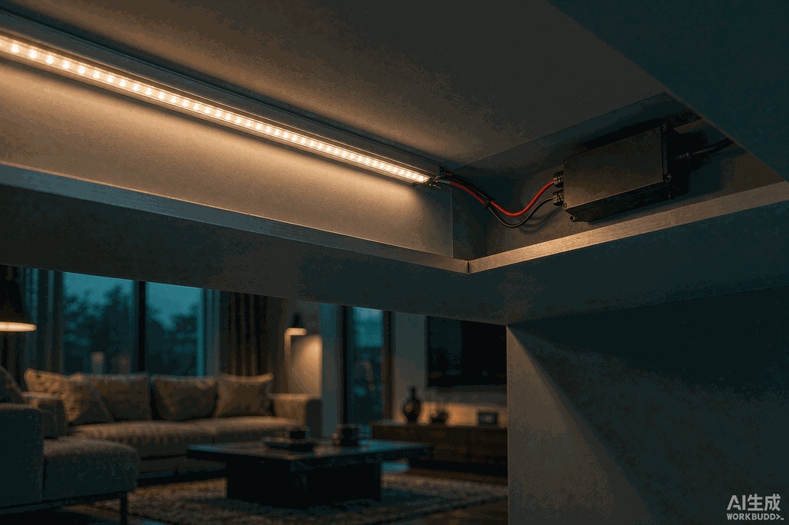

后台最近收到一条留言："客厅吊顶的灯带装完第三天，中间一截直接不亮了，木工已经封板，师傅说拆开来修要另外收钱。"
做了这么多年照明，我可以负责任地说：灯带是所有灯具里"装上去最容易、返工最难"的品类。灯坏了换驱动就行，灯带出了问题，轻则拆吊顶，重则整条报废。而九成的安装事故，都出在接线这六件事上。

灯带到底应该怎么剪？随手一剪整段不亮
排第一的事故原因。低压灯带的柔性板内部是并联的电路组，只能在印着剪刀标记的剪切位下刀——12V灯带通常每3颗灯珠一个剪切位，24V每6颗一个。剪错位置，铜箔断路，从下刀点往后整段熄灭。
COB灯带要好一些，剪切位更密（不少24V款能做到每2.5-5cm一个），按实际长度裁剪更从容。但"更密"不等于"随便剪"，标记依然要看。
正确做法：先量安装位长度，找到离目标长度最近的剪切位再下剪，宁可短一两厘米，不要长着硬塞。
接线全靠拧？正负极和接头才是隐形炸弹
第二个高频翻车点：师傅图快，把灯带铜箔和电源线直接绞在一起，缠圈胶布完事。刚装好能亮，半年后接头氧化发黑，接触电阻变大，表现就是那一段开始闪烁、变暗、时亮时不亮。

接头方式按可靠度排序：
| 接头方式 | 可靠度 | 适用场景 |
|---|---|---|
| 焊接 + 热缩管 | ★★★★★ | 长期暗装、吊顶内，一次到位 |
| 专用压接/穿刺接头 | ★★★★ | 免焊施工，主流选择 |
| 裸线绞接 + 胶布 | ★ | 只能应急，暗装必翻车 |
另外记住：正负极接反灯带不会亮，但不会坏，对调即可；RGB灯带的接线顺序（R/G/B/COM）接错则颜色全乱，接之前先对色。
一条串到底，尾巴必然变暗
很多客户问：为什么灯带前半截亮、后半截像蜡烛？这是压降——铜箔有电阻，电流走远了电压掉下来，12V灯带单端供电超过5米就能看出尾端变暗。

补救和预防的办法都很成熟：
- 升级24V：同样功率电流减半，单端可撑10米左右；
- 双端供电或中部补电：每5-10米从电源再拉一路线，首尾同时喂电；
- 线材用足1.5mm²以上纯铜线，别省这点钱。
详细的压降原理和选型计算，之前写过一篇专文，这里不展开。
电源功率不留余量，灯带"越用越暗"
电源配置的口诀：驱动功率 ≥ 灯带总功率 × 1.2。10米24V灯带按10W/米算就是100W，电源至少上120W。很多"新装就闪、越用越暗"的案例，本质是电源长期满载过热，输出电压被拉垮。
智能灯带还要多想一步：调光变色靠的是恒压驱动 + 前端控制器（Zigbee/蓝牙模块），电源本体不要选带调光功能的款式，控制交给控制器，各司其职才稳定。
裸贴不进铝槽，白瞎了好灯带
背胶裸贴是快捷，但代价有三：散热差、光斑乱、灯带弯歪不直。**铝槽（LED专用铝型材）**是灯带的标配三件套之一：
- 散热：铝合金导热能显著降灯珠温度，光衰慢、寿命长；
- 光效：配磨砂PC罩，光线柔化成一条连续光带；
- 固定：先固定铝槽再放灯带，坏了还能抽出来换。
浅灯槽、近距离直视的位置，强烈建议铝槽 + COB灯带的组合，出光效果和裸贴SMD完全是两个档次。
潮湿区不做防水，一两个月就发黑
卫生间、阳台、厨房水槽下、户外檐口，IP20裸板灯带一律别用。选型口诀：室内干燥区IP20够用，溅水区IP65（硅胶灌封），户外淋雨IP67。防水灯带的接头同样要防水处理，串接处套防水接头或打胶——最常见的故障点恰恰不是灯带本体，而是被忽略的接头。
装修下单前，照这张清单过一遍
| 检查项 | 合格标准 |
|---|---|
| 裁剪 | 只在剪切位下刀，先量再剪 |
| 接头 | 焊接+热缩管或压接接头，禁止绞接暗装 |
| 供电 | 12V单路≤5米，24V≤10米，长距离双端补电 |
| 电源 | 功率≥灯带总功率1.2倍，恒压款 |
| 散热 | 暗装/直视位进铝槽，配PC罩 |
| 防水 | 按区域选IP20/IP65/IP67，接头同步防水 |
| 通电测试 | 封板/封槽前必须整条通电试灯 |
最后一条单独强调：木工封吊顶之前，把灯带接好电源整条点亮看半小时，均匀、不闪、无暗区，再让封板。五分钟的测试，省的是砸吊顶的返工费。
常见问题
Q: 灯带可以随便剪短吗？
A: 不可以。只能在灯带板上的剪刀标记（剪切位）处裁剪，12V通常每3颗灯珠一个剪切位，24V每6颗一个。剪错位置铜箔断路，后面整段不亮。
Q: 灯带接头为什么会用一段时间就接触不良？
A: 裸线绞接的接头会随温度变化松脱并逐渐氧化，接触电阻变大后出现闪烁和变暗。暗装场景应使用焊接加热缩管或专用压接接头。
Q: 12V灯带和24V灯带哪个好？
A: 家装长距离铺贴优先24V——同等功率电流减半，压降更小，单端供电可支撑约10米；12V适合5米以内的短距离柜内、层板照明，剪切位更密，裁剪更灵活。
总结
- 只在剪切位剪灯带，先量长度再下刀；
- 接头用焊接或压接件，绞接是半年后闪烁的病根；
- 长距离上24V并双端补电，电源功率留20%余量；
- 暗装进铝槽，潮湿区按IP等级选型；
- 封板前整条通电测试，这是成本最低的保险。
选灯带、配驱动拿不准的话，欢迎联系耐利普科技工程团队：138-2549-6855。